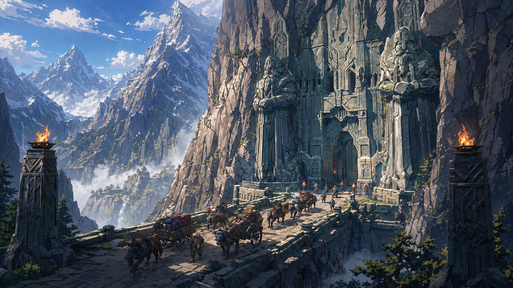

One world. Every tool. Infinite stories.
Mimir is a desktop application for structured worldbuilding. Your entries live as plain markdown files with YAML frontmatter, readable in any editor, ready for AI, and native to any game engine. 13+ built-in entry types. Custom schemas. Five relationship trees. Interactive maps. A full quest and dialogue graph editor with simulation mode. Available on Windows, macOS, and Linux.
Structured entries
Characters, places, factions, and your own custom types, all stored as plain markdown files. Create unlimited entry types with the visual schema editor.
Quest & dialogue editor
A node-based visual editor for branching quests and conversations with full simulation mode. Export directly to Unreal, Unity, and Godot.
Ask Mimir
An AI assistant that knows your entire world and refuses to make things up. Three quality tiers, from quick lookups to deep analysis.
AI & engine integration
Connect your world data to Claude, Cursor, and other AI tools via MCP. Export to all major game engines at launch.
Custom schemas
Define your own entry types with the visual schema editor. No code required. Five relationship trees, interactive maps, custom calendars, and timelines.
Translator
A full constructed-language workbench. Define grammar, vocabulary, and cultural registers. Mimir translates consistently every time.
Built different.
| Mimir | World Anvil | LegendKeeper | Articy:Draft | Obsidian | |
|---|---|---|---|---|---|
| Local-first (your files) | ✦ | ✦ | ✦ | ||
| Quest & dialogue editor | ✦ | ✦ | |||
| AI assistant (knows your world) | ✦ | ||||
| Game engine export | ✦ | ✦ | |||
| Custom entry types | ✦ | ✦ | ✦ | ✦ | ✦ |
| Interactive maps | ✦ | ✦ | ✦ | ||
| Constructed language tools | ✦ | ||||
| Free tier (unlimited entries) | ✦ | ✦ | ✦ | ||
| Paid tier price | £10/mo | ~£7/mo | ~£7.50/mo | ~£6/mo | Free |

Four steps to a living world.
-
i
Pick a folder.
Mimir reads from a folder you choose. No proprietary database, no upload step. Your world lives on your machine as plain markdown files.
-
ii
Write entries.
Use the structured editor or write markdown directly. Either way, the same plain files end up on disk, readable in any editor, ready for AI.
-
iii
Link everything.
Reference a character, a faction, a place. The links light up the timeline, the family tree, and Ask Mimir.
-
iv
Connect to your tools.
Export to Unreal, Unity, or Godot. Or point Claude, Cursor, or ChatGPT at the folder. Your tools learn your world.
Honest pricing. Your files stay yours.
Mimir Core is free forever. Studio adds everything you need to ship games. Pay-as-you-go credits let you try AI features before committing to a subscription.
All prices subject to change before launch. Early subscribers are grandfathered at their original price for a minimum of 12 months after any increase.
Mimir Core
The complete worldbuilding tool, free forever
- Unlimited world entries, 13+ built-in types
- Custom schemas with 9 field types
- Five relationship trees (family, genus, place, culture, faction)
- Interactive maps with pin linking
- Custom calendars, timelines, and story arcs
- Wiki-links with autocomplete and backlinks
- Git auto-commit and version history
- Naming consistency engine
- Markdown and HTML export
- Translator: pay-as-you-go credits
- Ask Mimir AI: pay-as-you-go credits
Mimir Studio
For creators who need the full toolkit
or £100/year (save £20)
- Everything in Mimir Core
- Engine exports: Unreal DataTable CSV, generic JSON
- MCP server for Claude, Cursor, and other AI tools
- Simulation mode polish and replay logging
- Time-aware trees and maps
- Lore consistency review (5 reviews/month)
- AI quota: 200 translations, 100 Ask Mimir queries/month
- Async git collaboration (V1.5)
- Priority support and early access
Mimir Studio Pro
For teams and studios in production
or £200/year (save £40)
- Everything in Mimir Studio
- Session capture with audio transcription, 15 hours/month (V2)
- Higher AI quotas across all features
- Procedural lore expansion with pattern enforcement (V2)
- Branching canon for multiple game endings (V2)
- Real-time multiplayer cursors, opt-in (V2)
Try AI features before you subscribe.
Free tier users can access Translator and Ask Mimir with pay-as-you-go credit packs. Credits never expire and carry over if you upgrade to a paid plan.
What we commit to.
We've seen how other worldbuilding tools treat subscribers when they cancel. We do things differently.
Your world files live on your computer. Cancelling removes AI features and paid tools; it never touches your data.
First-time subscription. No hoops, no retention flows, no questions.
We email you 14 days before any renewal. If you haven't used Mimir in 60 days, that email is even harder to miss.
Existing subscribers keep their price for 12 months minimum. 30-day notice before any increase takes effect.
Need team licensing or enterprise features?
We're building volume pricing and admin tools for studios.
Get in touch to discuss your team's needs.
Subscribe to Studio at launch and get every V1.5 and V2 feature added automatically: no upgrade fees, no version unlocks, no surprises.
See the full roadmapCommon questions
- Yes. Mimir Core is free with no time limit and no credit card required. It includes the complete worldbuilding tool, unlimited entries, custom schemas, maps, timelines, export, and the mobile companion. AI features (Translator and Ask Mimir) are available on the free tier using pay-as-you-go credit packs.
- Credit packs can be purchased at any time: £5 for 500 credits, £10 for 1,000, £20 for 2,000. Credits are spent when you use AI features: translations, Ask Mimir queries, and similar. Credits never expire. If you upgrade to a Studio subscription, your remaining credits carry over and are used after your monthly quota runs out.
- Nothing happens to your world data; it lives as files on your computer and always will. Cancelling removes access to paid features (engine exports, MCP server, quest editor, AI quotas) but never removes your data or locks you out of what you've built. You keep full access to Mimir Core and everything in it. You can re-subscribe at any time.
- They might eventually; building and maintaining Mimir has real costs. But we commit to: 30-day notice before any price increase, a minimum 12-month price lock for existing subscribers at the time of any change, and the right to cancel at the original price during that notice period. Early subscribers are protected. We'd rather give you time to decide than spring a surprise renewal.
- All non-AI features keep working normally: worldbuilding, maps, schemas, exports, the quest editor. For AI features, you can optionally enable OpenAI as a backup provider in your Mimir settings. When enabled, if Anthropic is unavailable, Mimir automatically routes to OpenAI temporarily. You'll see a banner when this happens. If you'd rather wait for Claude to return, just leave failover disabled. AI features will pause gracefully and resume when the service recovers.
- Async git-based collaboration is coming in V1.5, included in Studio at no extra cost. The approach is built around how game development teams already work: your code lives in git, your world data should too. Mimir's collaboration story is async, conflict-aware, and doesn't require everyone to be online at the same time. See the full roadmap for what's coming in V1.5.
- V1 supports Unreal Engine, Unity, Godot, and a generic structured JSON export that works with any engine that can read files. The quest and dialogue editor exports directly to all three supported engines. Game data round-tripping with Unreal (pushing changes from the engine back into Mimir) is a V2 feature.
- Yes. All worldbuilding features work fully offline: your entries, schemas, maps, timelines, family trees, and the quest editor all run locally on your machine with no internet required. AI features (Ask Mimir, Translator) require a connection since they route through our servers. If you lose connectivity mid-session, everything except AI continues working normally.
- Your world files live on your computer. We never see them unless you use an AI feature. When you use Ask Mimir or the Translator, the relevant context is sent to our AI broker (currently Anthropic's Claude) to process your request. We do not store, train on, or retain your world data after the request completes. The AI provider's standard data handling policies apply to the brief transit period. If you need stricter guarantees for unreleased IP, contact us to discuss options.
Join the beta.
Be among the first to use Mimir. Beta access opens in 2026; waitlist members get in first.